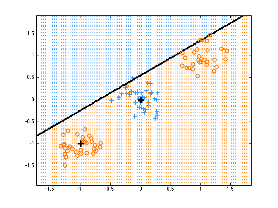
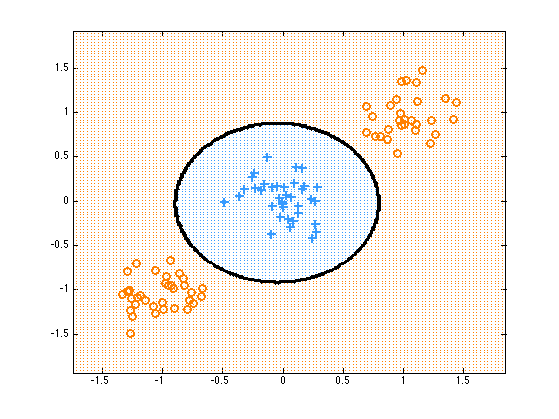
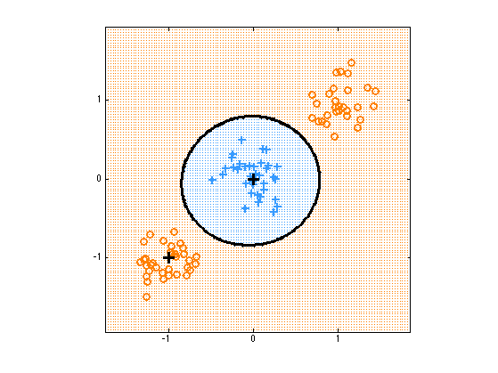
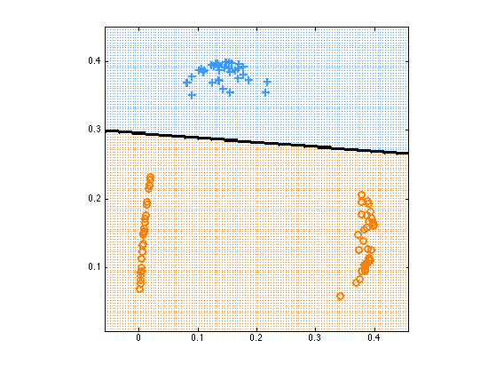

Logistic Regression with RBF Basis
based on Bishop fig 4.12
Contents
Parameters
mus = [0 0; -1 -1; 1 1];
sigma = 0.05;
N = 100;
pi = normalize(ones(1, 3));
centres = [-1 -1; 0 0];
sigmaRbf = 1;
lambda = 0;
addOnes = true;
Generate some data from a mixture of 3 2d spherical Gaussians
setSeed(0);
X = zeros(N, 2);
z = sampleDiscrete(pi, 1, N);
for c=1:3
model.mu = mus(c, :);
model.Sigma = sigma*eye(2);
X(z==c, :) = gaussSample(model, sum(z==c));
end
labels = z;
labels(labels==3) = 2;
y = labels';
Try fitting simple model in original feature space
model = logregFit(X, y);
plotDecisionBoundary(X, y, @(Xtest)logregPredict(model, Xtest));
hold on
plot(centres(:, 1), centres(:, 2), 'k+', 'MarkerSize', 12, 'LineWidth', 3);
printPmtkFigure logregBasisFnOriginal

Try fitting simple polynomial model
pp = preprocessorCreate('poly', 2, 'rescaleX', false, 'addOnes', true);
model = logregFit(X, y, 'lambda', 1e-3, 'preproc', pp);
plotDecisionBoundary(X, y, @(Xtest)logregPredict(model, Xtest));
printPmtkFigure logregBasisFnPoly

Map to RBF basis
Gtrain = kernelRbfSigma(X, centres, sigmaRbf);
model = logregFit(Gtrain, y, 'lambda', lambda);
Plot in the original space
plotDecisionBoundary(X, y, @(Xtest)logregPredict(model, kernelRbfSigma(Xtest, centres, sigmaRbf)));
hold on; axis square
plot(centres(:, 1), centres(:, 2), 'k+', 'MarkerSize', 12, 'LineWidth', 3);
set(gca, 'XTick', -1:1, 'YTick', -1:1);
printPmtkFigure basisFnOriginal

Plot in the transformed space
plotDecisionBoundary(Gtrain, y, @(Xtest)logregPredict(model, Xtest));
axis square
set(gca, 'XTick', 0:0.1:0.4, 'YTick', 0:0.1:0.4);
printPmtkFigure basisFnTransformed
